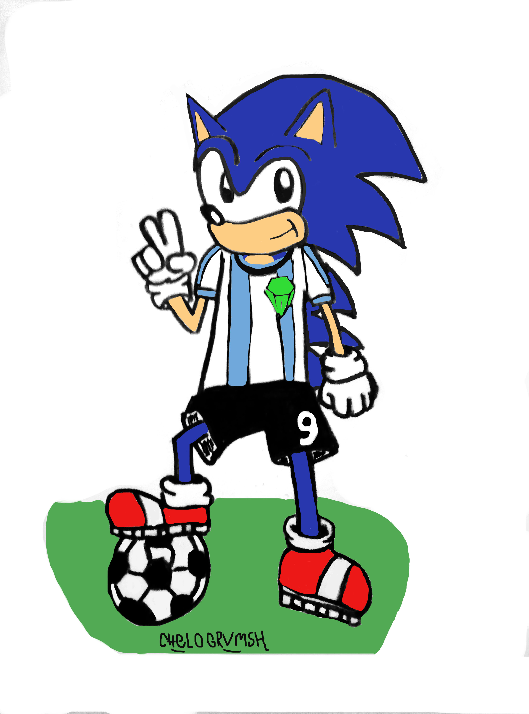

🎮 SONIC FEST – EDICIÓN ARTISTAS
¡Queremos agradecer de todo corazón a cada una de las personas que se sumaron y participaron en esta gran convocatoria!
Para formar parte, todos los artistas pasaron por nuestro servidor de Discord oficial, donde se armó una comunidad increíble.
Llevar esto adelante no hubiera sido posible sin el trabajo enorme de:
Si te interesa sumarte y participar, unite a nuestro servidor de Discord y leé detalladamente las reglas en la sección dedicada a la convocatoria de artistas:
💬 UNIRSE AL DISCORDA continuación, les presentamos las obras de los artistas que le dieron vida a esta convocatoria:

📸 Redes Sociales no provistas